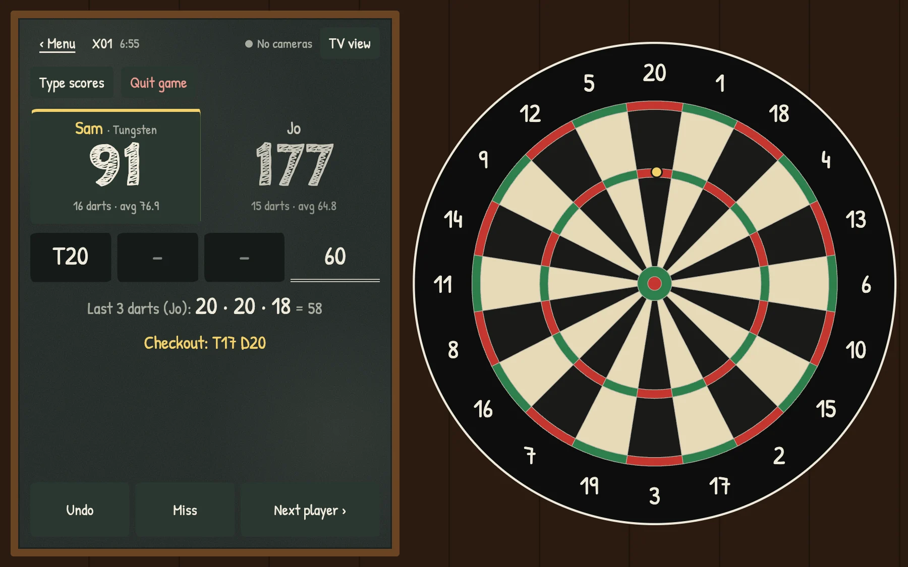
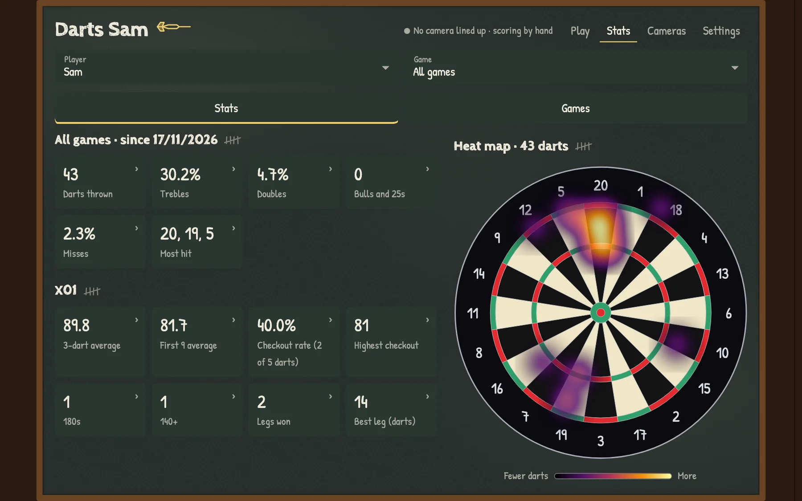
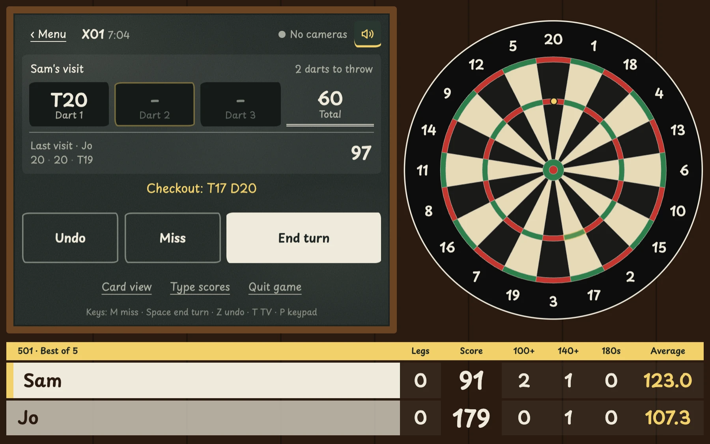
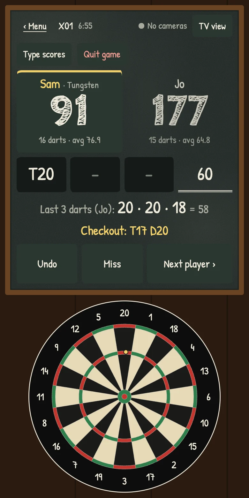

A free darts autoscorer that uses the webcams you have
Point two or three webcams at the board and Darts S.A.M sees where each dart lands. No cameras? Tap the board instead. Either way it calls every dart, does the adding up and keeps your stats.
Play in your browser. It's free.
Signing in takes one tap: no forms to fill in. What is stored about you

Scoring by camera
USB webcams round the board watch for each dart, work out where it landed and move on to the next player when the darts are pulled out. There is nothing to stick on the board: each camera finds the wires by itself, once, when you set it up.
The cameras plug into a Mac, Windows or Linux computer near the board, and every phone, tablet and TV you sign in on follows along. How the autoscoring works, and what you need.

Fourteen games
Including X01, Cricket, Killer, Around the Clock and Bob's 27, for a match with friends or practice on your own. See them all and how to play each one.
Stats, the telly and your phone



Every dart is called aloud, with the visit's total and what you require for a finish. And there are five themes to choose from, from the pub chalkboard to big-stage TV graphics.
How it compares
What you would pay for elsewhere is free here. Where the others are ahead, we say so.
| Darts S.A.M | Autodarts | DartCounter | |
|---|---|---|---|
| What it costs | Free. No paid plan, no adverts | Free, or Plus at £5.99 a month | Free, or Ultimate, a subscription |
| Camera scoring | As much as you like, with two or three webcams | Five phone-camera matches a month free, as many as you like on Plus | Only with a Target Omni |
| Killer and 121 Checkout | Free | On Plus | Not on their site |
| Playing strangers online | Not yet: Darts S.A.M is for the people round your board | Yes, with matchmaking and tournaments | Yes, the biggest of the three: three matches a week free |
| Open source | Yes, all of it | No | No |
From Autodarts' and DartCounter's own websites on 23 November 2026. The full comparison, with links to where they say it.
With cameras or without
| Tapping the board | With cameras | |
|---|---|---|
| What you need | A phone, tablet, TV or computer | Also a Mac, Windows or Linux PC and two or three webcams |
| Scoring | Tap the board or type the visit | The cameras score each dart. Tap to put one right |
| Without the internet | Once on your home screen | Needs the internet |
Everything else is the same either way: the caller, all fourteen games, the stats, TV view and the themes. Both are free, with no adverts. If you are weighing it up against the others, here is how it compares with Autodarts and DartCounter.